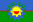

| Circuit | Date |
Winner | ||
| General Roca | 4 April | #9 - C.Ledesma (Chevrolet Astra) | ||
| Viedma | 25 April | #1 - G.Ponce de León (Ford Focus) | ||
| San Juan | 9 May | #8 - G.Furlan (Mitsubishi Lancer) | ||
| Paraná | 30 May | #3 - N.Fontana (Toyota Corolla) | ||
| San Luis | 20 June | #9 - C.Ledesma (Chevrolet Astra) | ||
| Oberá | 4 July | #9 - C.Ledesma (Chevrolet Astra) | ||
| Alta Gracia | 25 July | #10 - M.Bugliotti (Chevrolet Astra) | ||
| Concordia | 8 August | #9 - C.Ledesma (Chevrolet Astra) | ||
| Rio Cuarto | 29 August | #24 - F.Yannantuoni (Honda Civic) | ||
| San Rafael | 19 September | #1 - G.Ponce de León (Ford Focus) | ||
|  | Bahía Blanca | 17 October | #5 - M.Basso (Honda Civic) | |
| Buenos Aires | 31 October | #1 - P.de Leon / P.Di Palma (Ford Focus) | ||
| Rafaela | 14 November | #10 - M.Bugliotti (Chevrolet Astra) | ||
| Mar del Plata | 5 December | #1 - G.Ponce de León (Ford Focus) | ||